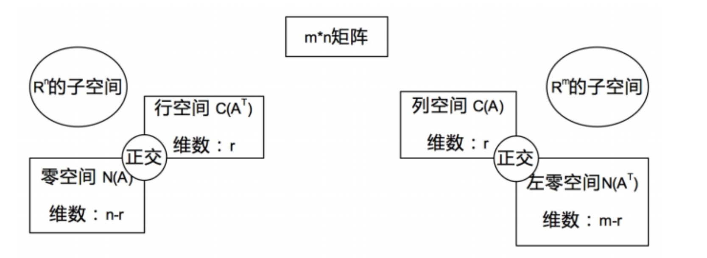
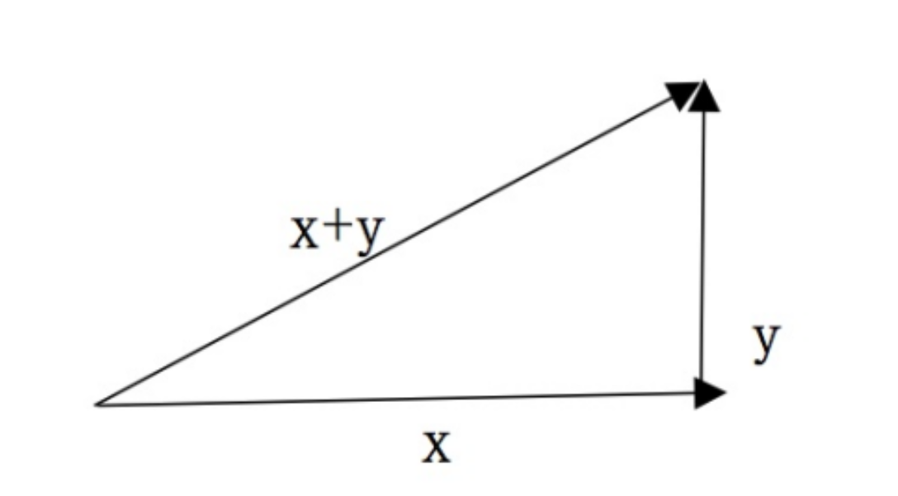

线性代数笔记(十四)——正交向量与子空间
这一讲从正交的角度来探讨四个子空间具有的性质。
正交向量与子空间
一图胜千言：

本节的所有内容都在阐释上面这张图。
正交
何为正交？从空间角度来看，正交就是垂直。无论是两个向量之间的正交，还是空间的正交，它们在线性代数中都意味着：垂直。
向量正交

如图，$x$和$y$两个向量相互垂直，根据中学知识，我们知道两个向量垂直则意味着这两个向量的内积为0，即：$x^Ty=0$。
这一结论可以用勾股定理来证明：
进一步，如果两个向量中其中某一个是零向量，那这两个向量一定正交。
空间正交
所谓空间的正交，就是：一个空间中的任意一个向量，都与另一个空间中的任意一个向量正交。
直觉上，我们可能会误以为三维直角坐标系中如$xy$平面$xz$平面正交，但实际上它们并不正交。这一点很容易证伪，我们选择两个平面交线$x$轴上的向量，任取两个，显然它们并不垂直。
反过来，这一事实也意味着：如果两个平面在某个非零向量处相交，那么它们一定不正交。
那么怎么样的两个空间可能会正交呢？我们先从$R^2$的子空间来分析，一个平面上的子空间有：
- 整个平面$P$
- 平面$P$上任意过原点的直线$L$
- 原点零向量
$P$与$L$永远不可能正交；当$L1$与$L2$在原点处垂直时，$L1$和$L2$正交；$L$与$0$永远正交。
高维空间也可以由此继续做推理。
矩阵子空间的正交
回归到矩阵，为什么我们可以笃定零空间和行空间是正交的呢？实际上我们只需要从行视角和零空间视角分别来看$Ax=0$即可窥得端倪：
从行视角看，$A$中每个行向量与向量$x$的内积都是$0$，而从零空间视角看，$x$可以是零空间任意一个向量，因此，这就意味着$A$中的每个行向量都与零空间的任意向量垂直。此外，行空间的所有向量都是由$A$中行向量线性组合得到，因此无论怎么组合，都无非表示成诸如$c\cdot row_1 + d\cdot row_2 + … + z\cdot row_m$，结果依然是$0$。
由此证得矩阵的行空间与零空间正交。同理，我们对矩阵进行转置，可以得到列空间与左零空间正交。
此外，行空间和零空间的关系，更像是把一个空间一分为二所得到的两个子空间：
- 行空间与零空间的维数之和是$n$。
- 行空间维数是$r$，零空间维数是$n-r$。
- 它们都是$R^n$的子空间。
- 列空间与左零空间的维数之和是$m$。
- 列空间维数是$r$，左零空间维数是$m-r$。
- 它们都是$R^m$的子空间。
进一步，我们把行空间和零空间称作为$R^n$中的正交补，列空间和左零空间称为$R^m$中的正交补。
所谓正交补，就是指对于一个空间$S$，另一个空间$T$囊括了所有垂直于$S$的向量而不是局部，这里的一分为二描述的是一种彻底程度。
无解方程的最优解
现实世界中，矩阵的数据源于测量，测量就难免有误差甚至错误，从而导致$Ax=b$无解。
什么样的$Ax=b$有解呢？我们知道$A$得是可逆的，当$m$很大，$n$很小时，我们可以通过不断的移除某些行，丢弃这些坏数据，让方程有解。这听上去是个合理的方法，但实际上却难以执行。为什么呢？因为我们根本无法判断究竟哪些行是脏数据。
对于这一困难，工程上常常会进行妥协：我们可以去求近似的最优解，类似于一种拟合。
怎么求近似解呢？在已知$Ax=b$无解的前提下，我们可以尝试在方程两侧同时左乘$A^T$，无解方程就变成$A^TA\hat x=A^Tb$。
这里的$\hat x$不是解$x$，$x$已经是无解的了，这里只是尝试找到一个近似解。
通过前面课程的学习，我们知道$A^TA$矩阵是一种对称方阵，此时如果$A^TA$可逆，那么解$\hat x$就容易求得。
然而$A^TA$也不见得就可逆，怎么去判断$A^TA$是否可逆呢？先说结论：当$A$中各列线性相关时，$A^TA$不可逆。
为了证明这一点，需要先得到两个性质：
- $N(A^TA)=N(A)$：二者具有相同的零空间。
- 对于$A^TAx=0$有：$x^TA^TAx=(Ax)^T(Ax)=0$，因此$Ax=0$
- rank(A^TA)=rank(A)：二者具有相同的秩。
- 由性质1可知二者零空间维数相同，且二者具有相同的列数，因此秩相等。
而$A^TA$若可逆，则意味着$N(A^TA)$只有零向量，既然$N(A)$与$N(A^TA)$相同，也就意味着$N(A)$中也只能有零向量，此时，$A$中各列线性无关。证毕。